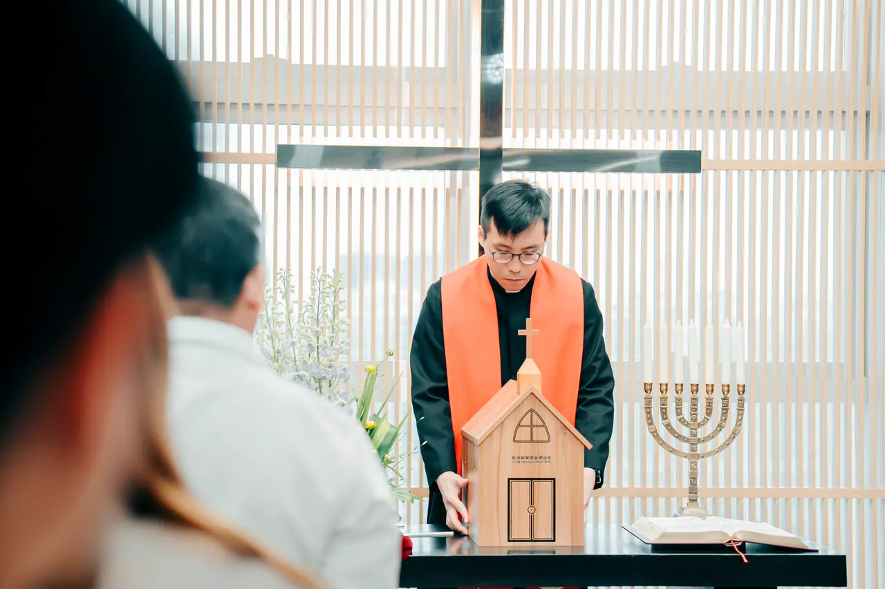

饑饉月2026
與耶穌一起更新——28天操練挑戰：Reboot・Rebuild・Reconnect
活動日期：3月8日（日）至4月4日（六）
饑饉月已於2026年完結。本頁保留活動內容，方便回顧及參考。
個人立志
透過 Reboot 重啟、Rebuild 重建及 Reconnect 重繫，建立更親近神的新習慣。
- 每天使用《格外的敬虔》靈修默想資料。
- 以28天挑戰逐步改善一項生活習慣。
- 以感恩或靈修操練重新與神建立連繫。
群體守望
各團契、家及小組以分享、提醒和代禱彼此守望；教會亦設有整堂挑戰表及活動分享。